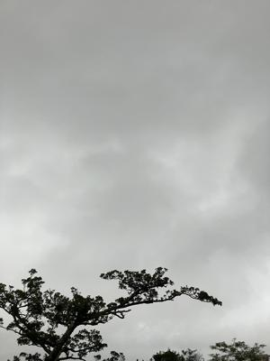
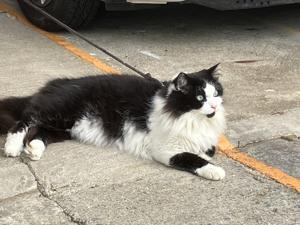

うるがいの話 ある日
最新: ジャケット補修【うるがいの話 ある日】とは 一日だけのプログです
『うるがいの話』の最新一日だけのプログで、通信料が少なく経済的だ。カニの画像をクリックすると全ての日付が載る『うるがいの話』サイトを表示します
|
|
【うるがいの話】 うるがい(ｳﾙｶﾞｲ urugai)とは、『もずくがに』の名前でとても大きくなります。 |
|---|---|
|
|
【カミマヤーの話】 猫のことを方言でマヤーといいます。カミマヤー（kamimayaa）とは、神の猫のことです。 |
|
【たながぁの音楽】 たながぁ（ﾀﾅｶﾞｰ tanagaa）とは手長えびのことで、何種類かあり大きいのは車 エビぐらいになります。 |

|
【ぶながぁの話】 ぶながぁ(ﾌﾞﾅｶﾞｰ bunagaa)とは、赤い髪の毛、赤い身体、そして身長は１ｍ２０ｃｍ ぐらい、川の蟹を食べているの目撃された。場所は沖縄県国頭郡大宜味村のと ある村僕の隣近所に住んでいる爺さんから、聞いた話です。 |
|
|
【ギーマの話】 ギーマ(giima)とは、山原の里山に咲くスズランに似た、 花を付けます。実は食べられます、 気が付くと口の周りが紫になっています。 |
2025年11月14日 (金）ジャケット補修
17:26

ジャケットの後ろが、破れいるのに一年前から気付き直そうと思
いながらも、放置していた。ところが、近々着る場面の夢を見る
ヨメも、直す上着があるときのう首里リュウボウにいった。なん
と、以前利用していたお店が無い、お店の人に尋ねるとあっさり
無くなりましたと。仕方ないので、いつも利用している近所の個
人経営のお店に行く、今日は定休日ですと看板が。そして、昼間
にいくと営業中と看板はあるものの、入口の扉が閉まっている（
よくあるんです）。しかたない遠いが『ママのリフォーム』の店
へいく。ここを直して欲しい、３、２００円ですとお金を準備し
た。店員さんがさらにチェックすると
うしろベント破れ 補修 ３、,２００円
追加
左右袖下ホツレ直し
左後裾スクイ直し
両脇裏地ホツレ直し
しめて７、１５０円！、ボロボロ新品を買った方が良かったかも
ジョギング前の柔軟体操をしていると、『足の筋肉がいいですね
』と公園の管理人が声をかけてきた。ええ、雨の日も傘をもって
走っています。すると、スタスタ早歩きのおばさんが、歩いてく
る。あの人、２５年間もあーなんですよ。ほー、どうやって２５
年をカウントしているのだろうと思った。そして、ジョギングす
るといつもの高級猫がいた。

いやー、それにしてもきのうの夜中の雨嵐は凄かった。